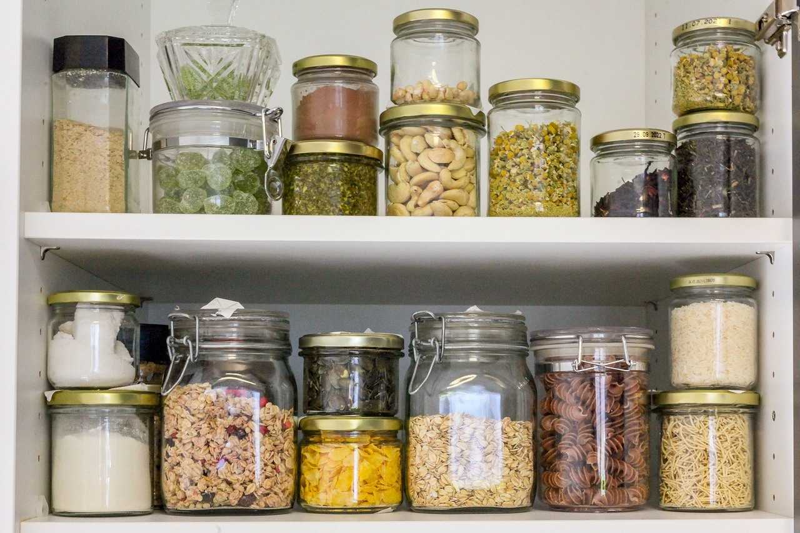
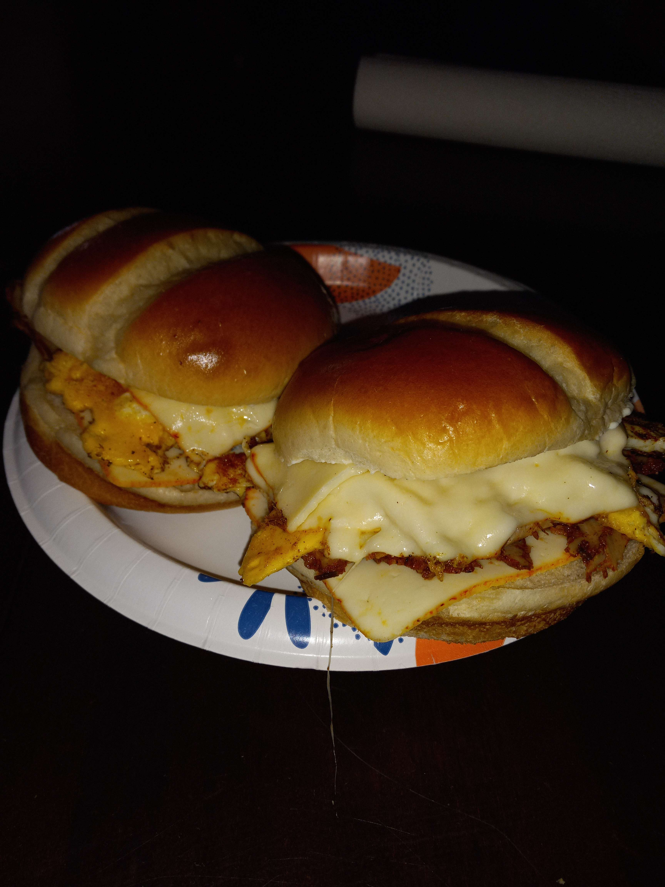

Are you new to cooking or tired of following complicated recipes? You're in the right place! My name is Cameron, and I'm here to help you learn the art of cooking without a recipe. With a background in self-taught cooking, I've learned how to create tasty meals just from memory. Growing up, my love for cooking started in the church kitchen, where I’d help make big dinners each week. One day, craving a meal I hadn't had in years, I recreated a tater-tot casserole perfectly from memory. That day, I realized how easy it can be to cook with just a little confidence, a handful of ingredients, and a simple mindset. Now, I'm here to share this skill with you!
If you're a young adult, a new graduate living alone, or just someone who’s never felt at home in the kitchen, my approach will guide you step-by-step. Instead of strict recipes, I'll introduce you to "skeleton recipes." These are flexible meal ideas where you get to decide what to add, using whatever ingredients you have on hand. It’s all about confidence and experimenting—think of it as a choose-your-own-adventure for cooking!

Cooking without recipes isn’t just about food—it’s about freedom in the kitchen. You'll learn how to make comfort food, explore new flavors, and feel confident enough to create your own meals. With my guidance, you’ll be turning leftovers into masterpieces and discovering the joys of self-taught cooking.
Join me and unlock a world of "what to cook" ideas and easy-to-follow, skeleton recipes. This journey will show you that cooking isn’t just about following recipes; it’s about creating meals that feel good to make, taste good to eat, and come from the heart. Let's get started on making cooking fun, simple, and as easy as opening the fridge!